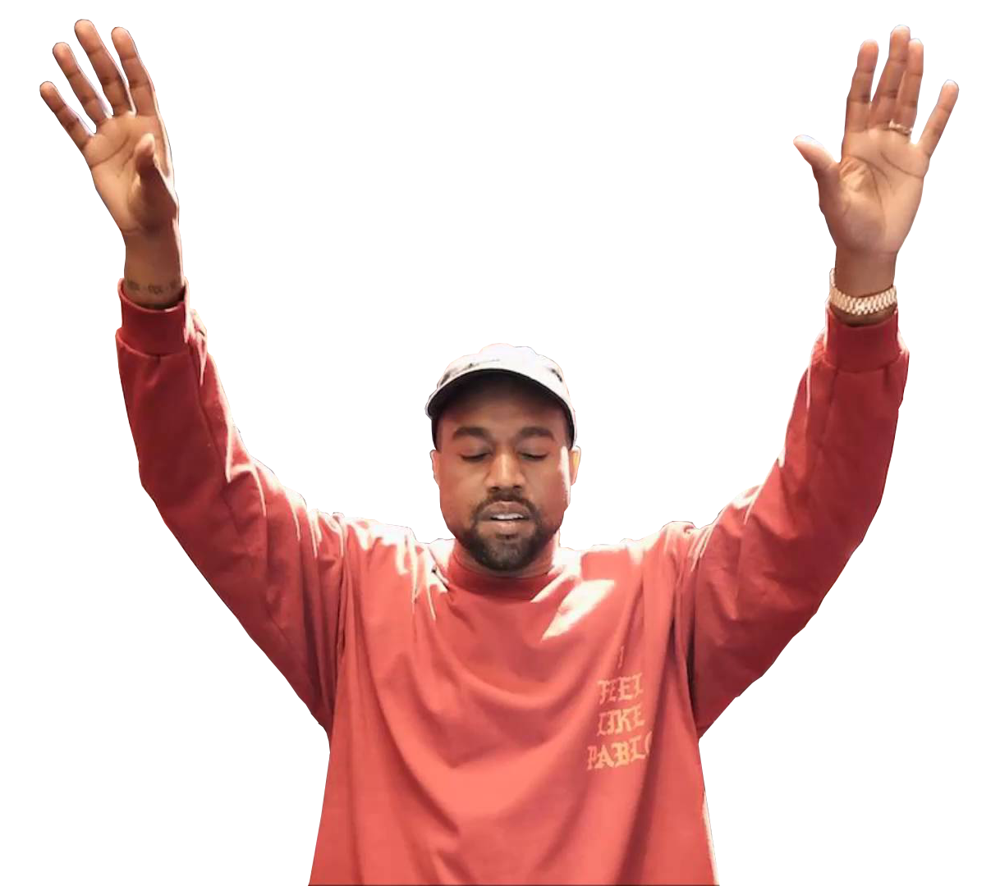
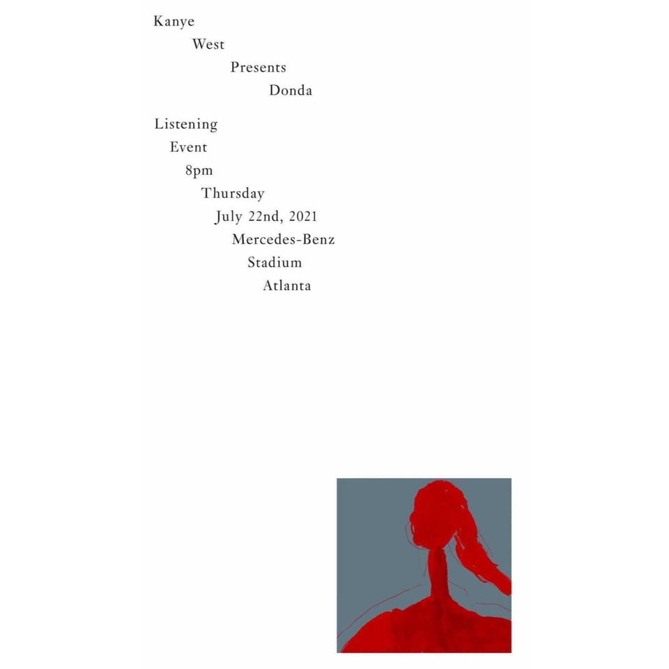
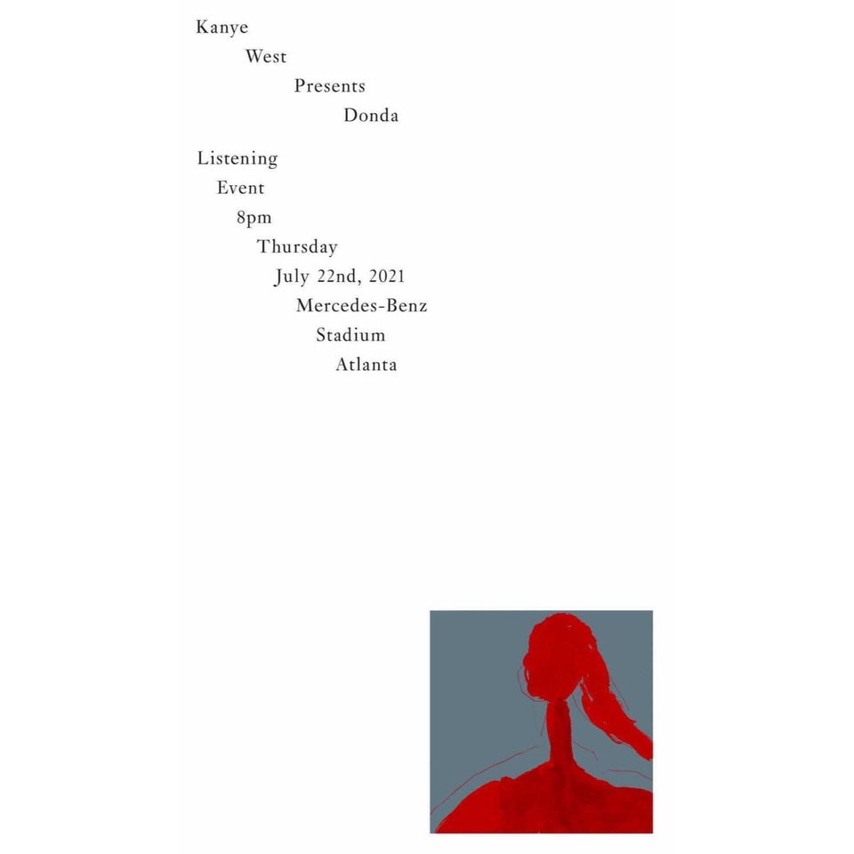
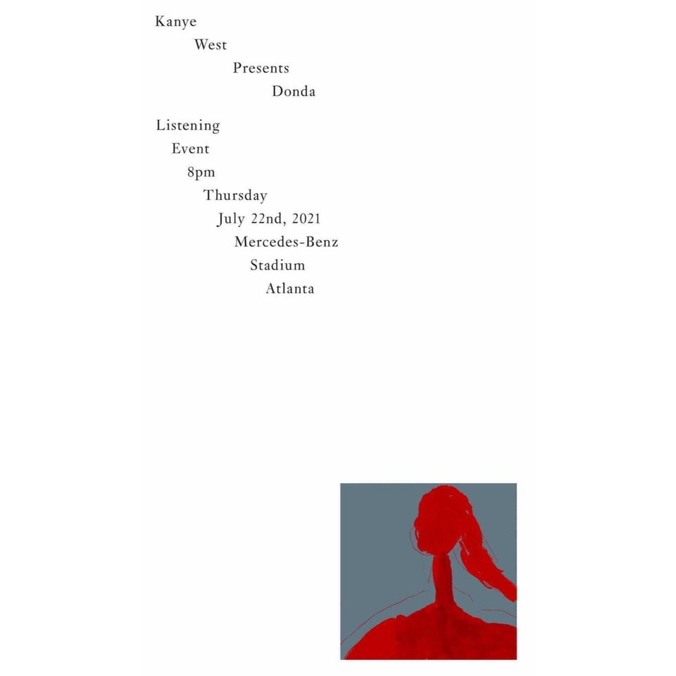

KANYE WEST
YEEZY
MUSIC
DONDA


Kanye Omari West (born June 8, 1977)
is an American rapper, singer, record producer,
influential in the 21st-century development of
mainstream hip hop, popular music, and
popular culture in general.
Born in Atlanta and raised in Chicago,
West gained notoriety as a producer for
Roc-A-Fella Records in the early
2000s, producing singles for several
mainstream artists. Intent on pursuing
a solo career as a rapper, West
released his debut album The College Dropout
in 2004 to critical and commercial success,
and founded the record label GOOD Music.

 
